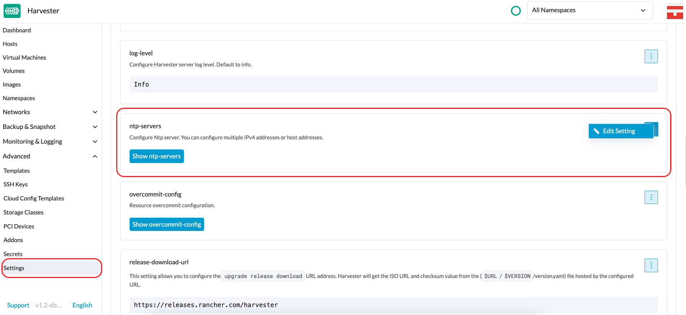
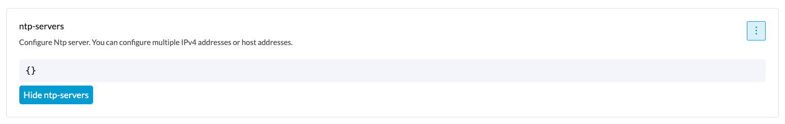

|
Este documento foi traduzido usando tecnologia de tradução automática de máquina. Sempre trabalhamos para apresentar traduções precisas, mas não oferecemos nenhuma garantia em relação à integridade, precisão ou confiabilidade do conteúdo traduzido. Em caso de qualquer discrepância, a versão original em inglês prevalecerá e constituirá o texto official. |
Gerenciamento de Host
Os usuários podem visualizar e gerenciar nós SUSE Virtualization a partir da página do host. O primeiro nó sempre é definido como um nó de gerenciamento do cluster. Quando há três ou mais nós, os dois outros nós que se juntaram primeiro são automaticamente promovidos a nós de gerenciamento para formar um cluster HA.
|
Como SUSE Virtualization é construído sobre Kubernetes e usa etcd como seu banco de dados, a tolerância máxima a falhas de nó é um quando há três nós de gerenciamento. |

SUSE Virtualization reserva recursos de CPU para operações em nível de sistema, razão pela qual o número total de cores indicado na coluna CPU é ligeiramente menor do que o número real de cores em cada host. Para mais informações, consulte Cálculo do pool de CPU compartilhado.
Manutenção de Nó
Os usuários administradores podem habilitar o Modo de Manutenção (selecione ⋮ > Habilitar Modo de Manutenção) para expulsar automaticamente todas as máquinas virtuais de um nó. Este modo utiliza migração em lote para mover as máquinas virtuais migráveis ao vivo para outros nós, o que é útil quando você precisa reiniciar, atualizar o firmware ou substituir componentes de hardware. São necessários pelo menos dois nós ativos para usar este recurso.
Máquinas virtuais não migráveis podem impedir que o nó ative o Modo de Manutenção. Quando isso ocorre, você deve identificar e desligar manualmente essas máquinas virtuais. Para mais informações, consulte Migração ao Vivo.
Para forçar VMs individuais a desligar em vez de migrar para outros nós, adicione o rótulo harvesterhci.io/maintain-mode-strategy e um dos seguintes valores a essas VMs:
-
Migrate: Migra a VM ao vivo para outro nó no cluster. Este é o comportamento padrão se o rótuloharvesterhci.io/maintain-mode-strategynão estiver definido. -
ShutdownAndRestartAfterEnable: Reinicia a VM após o nó mudar para o modo de manutenção. A VM é agendada em um nó diferente. -
ShutdownAndRestartAfterDisable: Desliga a VM quando o modo de manutenção está habilitado e reinicia a VM quando o modo de manutenção está desabilitado. A VM permanece no mesmo nó. -
Shutdown: Desliga a VM quando o modo de manutenção está habilitado. A VM permanece desligada em vez de reiniciar.
Você pode forçar um desligamento coletivo de todas as VMs em um nó na tela Habilitar Modo de Manutenção. Isso desabilita configurações individuais usando o rótulo harvesterhci.io/maintain-mode-strategy.
Para executar um comando especial antes de desligar uma VM, considere usar o gancho de ciclo de vida do contêiner PreStop.

Isolando um Nó
Nós isolados são marcados como não agendáveis. Isolar é útil quando você deseja impedir que novas cargas de trabalho sejam agendadas em um nó. Você pode desisolar um nó para torná-lo agendável novamente.

Removendo um Nó
|
Antes de remover um nó de um SUSE Virtualization cluster, determine se os nós restantes têm recursos computacionais e de armazenamento suficientes para assumir a carga de trabalho do nó a ser removido. Verifique o seguinte:
Se os nós restantes não tiverem recursos suficientes, as VMs podem falhar ao migrar e os volumes podem se degradar quando você remover um nó. |
1. Verifique se o nó pode ser removido do cluster.
Você pode remover com segurança um nó de plano de controle dependendo da quantidade e disponibilidade de outros nós no cluster.
-
O cluster tem três nós de plano de controle e um ou mais nós de trabalho.
Quando você remove um nó de plano de controle, um nó de trabalho será promovido a nó de plano de controle. SUSE Virtualization permite que você atribua um papel a cada nó que ingressa em um cluster. Em versões anteriores, nós de trabalho eram selecionados aleatoriamente para promoção. Se você preferir promover nós específicos, consulte Gerenciamento de Papéis e Arquivo de Configuração para mais informações.
A promoção automática de nós ocorre apenas quando um nó do plano de controle é removido do cluster. Isso não inclui situações em que um nó se torna indisponível devido a falhas nas verificações de saúde. O nó não saudável mantém seu papel.
-
O cluster tem três nós do plano de controle e nenhum nó de trabalho.
Você deve adicionar um novo nó ao cluster antes de remover um nó do plano de controle. Isso garante que o cluster sempre tenha três nós do plano de controle e que um quórum possa ser formado mesmo que um nó do plano de controle falhe.
-
O cluster tem apenas dois nós do plano de controle e nenhum nó de trabalho.
Remover um nó do plano de controle nesta situação não é recomendado porque os dados do etcd não são replicados em um cluster de nó único. A falha de um único nó pode fazer com que o etcd perca seu quórum e desligue o cluster.
2. Verifique o status dos volumes.
-
Acesse a interface SUSE Storage incorporada.
-
Vá para a tela Volume.
-
Verifique se o estado de todos os volumes é Saudável.
3. Expulse as réplicas do nó a ser removido.
-
Acesse a interface SUSE Storage incorporada.
-
Vá para a tela Nó.
-
Selecione o nó que você deseja remover, clique no ícone na coluna Operação e, em seguida, selecione Editar nó e discos.
-
Defina as seguintes configurações:
-
Agendamento de Nós: Selecione Desativar.
-
Expulsão Solicitada: Selecione Verdadeiro.
-
-
Clique em Salvar.
-
Volte para a tela Nó e verifique se o valor de Réplicas para o nó a ser removido é 0.
|
A expulsão não pode ser concluída se os nós restantes não puderem aceitar réplicas do nó a ser removido. Nesse caso, alguns volumes permanecerão no estado Degradado até que você adicione mais nós ao cluster. |
4. Gerenciar Máquinas Virtuais não migráveis
Verifique se há alguma máquina virtual não migrável.
|
5. Expulse as cargas de trabalho do nó a ser removido.
Você pode habilitar o Modo de Manutenção no nó para migrar automaticamente VMs e cargas de trabalho ao vivo. Você também pode migrar ao vivo manualmente VMs para outros nós.
Todas as cargas de trabalho foram expelidas com sucesso se o estado do nó for Manutenção.

|
Se um cluster tiver apenas dois nós do plano de controle, SUSE Virtualization não permite que você habilite o Modo de Manutenção em nenhum nó. Você pode drenar manualmente o nó a ser removido usando o seguinte comando: kubectl drain <node_name> --force --ignore-daemonsets --delete-local-data --pod-selector='app!=csi-attacher,app!=csi-provisioner' Novamente, remover um nó do plano de controle nesta situação é não recomendado porque os dados do etcd não são replicados. A falha de um único nó pode fazer com que o etcd perca seu quórum e desligue o cluster. |
6. Exclua os serviços RKE2 e desligue o nó.
-
Faça login no nó usando a conta root.
-
Execute o script
/opt/rke2/bin/rke2-uninstall.shpara excluir os serviços RKE2 em execução no nó. -
Desligue o nó.
7. Remova o nó.
-
Na interface, vá para a tela Hosts.
-
Localize o nó que você deseja remover e clique em ⋮ → Remover.

|
Há um problema conhecido sobre a exclusão forçada de nós. Uma vez resolvido, você pode pular esta etapa. |
Gerenciamento de Função
Problemas de hardware podem forçá-lo a substituir o nó de gerenciamento. SUSE Virtualization melhora o processo ao introduzir os seguintes papéis:
-
Gerenciamento: Permite que um nó seja priorizado quando SUSE Virtualization promove nós a nós de gerenciamento.
-
Testemunha: Restringe um nó a ser um nó testemunha (funciona apenas como um nó etcd) em um cluster específico.
-
Trabalhador: Restringe um nó a ser um nó de trabalho (nunca promovido a nó de gerenciamento) em um cluster específico.
|
SUSE Virtualization atualmente permite apenas um nó testemunha no cluster. |
Para mais informações sobre a atribuição de papéis a nós, veja Instalação ISO.
Gerenciamento de múltiplos discos
Adicionar Discos Adicionais
Os usuários podem visualizar e adicionar vários discos como volumes de dados adicionais na página de edição do host.
-
Vá para a página Hosts.
-
No nó que você deseja modificar, clique em ⋮ → Editar Configuração.

-
Selecione a aba Armazenamento e clique em Adicionar Disco.

SUSE Virtualization não suporta a adição de partições como discos adicionais. Se você quiser adicioná-lo como um disco adicional, certifique-se de excluir todas as partições primeiro (por exemplo, usando
fdisk). -
Selecione um provisionador para o disco.
-
LonghornV1 (CSI): Este é o provisionador padrão.

Você deve definir Forçar Formatação como Sim se o dispositivo de bloco nunca foi formatado forçadamente.

-
LVM: Selecione este provisionador se você quiser usar Driver CSI LVM (Experimental) para criar volumes persistentes para suas cargas de trabalho.

-
-
Clique em Salvar.
-
Na tela de detalhes do host, verifique se os discos foram adicionados e se o provisionador correto foi definido.
Você também pode adicionar tags de armazenamento se quiser que os dados do volume SUSE Storage sejam armazenados em nós ou discos específicos. As tags de armazenamento só podem ser usadas com os provisionadores LonghornV1 (CSI) e LonghornV2 (CSI).


|
Para que SUSE Virtualization identifique os discos, cada disco precisa ter um WWN único. Caso contrário, SUSE Virtualization se recusará a adicionar o disco.
Se o seu disco não tiver um WWN, você pode formatá-lo com o sistema de arquivos |
+
|
Se você estiver testando SUSE Virtualization em um ambiente QEMU, precisará usar o QEMU v6.0 ou posterior. Versões anteriores do QEMU sempre gerarão o mesmo WWN para emulação de discos NVMe. Isso fará com que SUSE Virtualization não adicione os discos adicionais, conforme explicado acima. No entanto, você ainda pode adicionar um disco virtual com o controlador SCSI. As informações do WWN podem ser adicionadas manualmente junto com a operação de anexação do disco. Para mais detalhes, consulte o script. |
Tags de Armazenamento
O recurso de tags de armazenamento permite que apenas certos nós ou discos sejam usados para armazenar dados do volume SUSE Storage. Por exemplo, dados sensíveis a desempenho podem usar apenas os discos de alto desempenho que podem ser marcados como fast, ssd ou nvme, ou apenas os nós de alto desempenho marcados como baremetal.
Este recurso suporta tanto discos quanto nós.
Configuração
As tags podem ser configuradas através da interface SUSE Virtualization na página do host:
-
Clique em
Hosts->Edit Config->Storage -
Clique em
Add Host/Disk Tagspara começar a digitar e pressione enter para adicionar novas tags. -
Clique em
Savepara atualizar as tags. -
Na página StorageClasses, crie uma nova classe de armazenamento e selecione aquelas tags definidas nos campos
Node SelectoreDisk Selector.
Todos os volumes agendados existentes no nó ou disco não serão afetados pelas novas tags.
|
Quando várias tags são especificadas para um volume, o disco e os nós (a que o disco pertence) devem ter todas as tags especificadas para se tornarem utilizáveis. |
Remover discos
Antes de remover um disco, você deve primeiro expulsar as réplicas SUSE Storage no disco.
|
Os dados da réplica seriam reconstruídos em outro disco automaticamente para manter a alta disponibilidade. |
Identifique o disco a ser removido
-
Vá para a página Hosts.
-
No nó contendo o disco, selecione o nome do nó e vá para a aba Storage.
-
Encontre o disco que você deseja remover. Vamos supor que queremos remover
/dev/sdb, e o ponto de montagem do disco é/var/lib/harvester/extra-disks/1b805b97eb5aa724e6be30cbdb373d04.

Expulsar réplicas (SUSE Storage painel)
-
Por favor, siga esta sessão para habilitar o painel SUSE Storage incorporado.
-
Visite o painel SUSE Storage e vá para a página Nó.
-
Expanda o nó que contém o disco. Confirme que o ponto de montagem
/var/lib/harvester/extra-disks/1b805b97eb5aa724e6be30cbdb373d04está na lista de discos.
-
Selecione Editar nó e discos.

-
Role até o disco que você deseja remover.
-
Defina
SchedulingcomoDisable. -
Defina
Eviction RequestedcomoTrue. -
Selecione Salvar. Não selecione o ícone de excluir.

-
-
O disco será desativado. Por favor, aguarde até que a contagem de réplicas do disco se torne
0para prosseguir com a remoção do disco.
Restrições de Distribuição de Topologia
Rótulos de nó são usados para identificar os domínios de topologia em que cada nó está. Você pode configurar rótulos como topology.kubernetes.io/zone na interface SUSE Virtualization.
-
Vá para Hosts.
-
Selecione o nó de destino e, em seguida, selecione ⋮ → Editar Config.
-
Na aba Rótulos, clique em Adicionar Rótulo e, em seguida, especifique o rótulo
topology.kubernetes.io/zonee um valor. -
Clique em Salvar.
O rótulo é sincronizado automaticamente com o nó correspondente SUSE Storage.
Hugepages
Hugepages melhoram a gestão de memória no Linux ao permitir que o kernel aloque memória em blocos significativamente maiores do que o padrão de 4 KB. Tamanhos de página maiores melhoram a eficiência ao reduzir o tempo de CPU necessário para o kernel Linux processar alocações de memória. Isso, por sua vez, pode aumentar o desempenho geral do sistema.
Existem dois tipos de hugepages:
-
Persistente ou estática: Pré-alocada com base em parâmetros de inicialização do kernel relevantes ou configurações de SUSE Virtualization.
-
Anônima ou transparente: Alocada e desalocada automaticamente pelo kernel Linux.
Você pode visualizar informações sobre a alocação atual de hugepages para cada nó.
-
Na interface SUSE Virtualization, vá para a tela Hosts.
-
Clique no nó alvo e, em seguida, selecione a aba Hugepages.
As informações na aba Hugepages estão divididas em duas seções:
-
Meminfo: Mostra a quantidade total de memória em uso para hugepages anônimas (transparentes), o tamanho padrão de hugepage e detalhes sobre hugepages persistentes (estáticas).
O campo Anonymous Hugepages (bytes) geralmente mostra um valor grande, refletindo a RAM utilizada automaticamente pelo kernel Linux para hugepages transparentes.
Por outro lado, o campo Total Hugepages, que representa hugepages alocadas estaticamente, geralmente permanece em
0. No entanto, se o Longhorn V2 Data Engine estiver habilitado, esse valor muda para1024. -
Transparent Hugepages: Mostra as configurações atuais de hugepages transparentes.
A tabela a seguir descreve as opções e valores padrão para cada configuração:
Opção Valores Suportados Valor Padrão Habilitado
Always,Madvise,NeverAlwaysShared Memory Enabled
Always,Within Size,Advise,Never,Deny,ForceNeverDefragmentation
Always,Defer,Defer+Madvise,Madvise,NeverMadviseVocê pode modificar essas configurações para cada nó selecionando ⋮ → Editar Config e, em seguida, clicando na aba Hugepages.
Para mais informações sobre as opções, consulte Suporte a Hugepage Transparente na documentação do kernel Linux.
Modo Ksmtuned
Ksmtuned é uma ferramenta de automação KSM implantada como um DaemonSet para executar Ksmtuned em cada nó. Ele iniciará ou parará o KSM monitorando a proporção percentual de memória disponível (ou seja, Coeficiente de Limite). Por padrão, você precisa habilitar manualmente o Ksmtuned em cada interface de usuário do nó. Você poderá ver as estatísticas do KSM na interface de usuário do nó após 1-2 minutos. (verifique KSM para mais detalhes).
Execução Rápida
-
Vá para a página Hosts.
-
No nó que você deseja modificar, clique em ⋮ → Editar Config.
-
Selecione a aba Ksmtuned e selecione Executar em Estratégia de Execução.
-
(Opcional) Você pode modificar Coeficiente de Limite conforme necessário.

-
Clique em Salvar para atualizar.
-
Aguarde cerca de 1-2 minutos e você pode verificar suas Estatísticas clicando na aba Seu Nó → Ksmtuned.

Parâmetros
Estratégia de Execução:
-
Parar: Parar o Ksmtuned e o KSM. As VMs ainda podem usar páginas de memória compartilhada.
-
Execute: Executar o Ksmtuned.
-
Podar: Parar o Ksmtuned e podar páginas de memória do KSM.
Coeficiente de Limite: configura a proporção percentual de memória disponível. Se a memória disponível for menor que o Coeficiente de Limite, o KSM será iniciado; caso contrário, o KSM será parado.
Mesclar Entre Nós: especifica se páginas de diferentes nós NUMA podem ser mescladas.
Modo:
-
Normal: O modo padrão. O nó de controle ksmd usa cerca de 20% de uma única CPU. Ele usa os seguintes parâmetros:
Boost: 0
Decay: 0
Maximum Pages: 100
Minimum Pages: 100
Sleep Time: 20-
Alto desempenho: O nó ksmd usa de 20% a 100% de uma única CPU e tem maior eficiência de varredura e mesclagem. Ele usa os seguintes parâmetros:
Boost: 200
Decay: 50
Maximum Pages: 10000
Minimum Pages: 100
Sleep Time: 20-
Personalizado: Você pode personalizar a configuração para alcançar o desempenho que deseja.
Ksmtuned usa os seguintes parâmetros para controlar a eficiência do KSM:
| Parâmetros | Descrição |
|---|---|
Aumentar a |
O número de páginas escaneadas é incrementado a cada vez se a memória disponível for menor que o Coeficiente de Limite. |
Decaimento |
O número de páginas escaneadas é decrementado a cada vez se a memória disponível for maior que o Coeficiente de Limite. |
Páginas Máximas |
Número máximo de páginas por varredura. |
Páginas Mínimas |
O número mínimo de páginas por varredura, também a configuração para a primeira execução. |
Tempo de Espera (ms) |
O intervalo entre duas varreduras, que é calculado com a fórmula (Tempo de Espera * 16*1024*1024 / Memória Total). Mínimo: 10ms. |
Por exemplo, suponha que você tenha um nó de memória de 512GiB que usa os seguintes parâmetros:
Boost: 300
Decay: 100
Maximum Pages: 5000
Minimum Pages: 1000
Sleep Time: 50Quando o Ksmtuned inicia, inicializa pages_to_scan no KSM para 1000 (Páginas Mínimas) e define sleep_millisecs para 10 (50 * 16 * 1024 * 1024 / 536870912 KiB < 10).
O KSM começa quando a memória disponível cai abaixo do Coeficiente de Limite. Se detectar que está em execução, pages_to_scan incrementa em 300 (Impulso) a cada minuto até atingir 5000 (Páginas Máximas).
O KSM irá parar quando a memória disponível estiver acima do Coeficiente de Limite. Se detectar que está parado, pages_to_scan decrementa em 100 (Decaimento) a cada minuto até atingir 1000 (Páginas Mínimas).
Configuração do NTP
A sincronização de tempo é um aspecto importante da arquitetura de cluster distribuído. Por causa disso, SUSE Virtualization fornece uma maneira mais simples de configurar as definições do NTP.
SUSE Virtualization suporta a configuração do NTP na tela de Configurações da UI SUSE Virtualization (Avançado > Configurações). Você pode configurar as definições do NTP para todo o cluster SUSE Virtualization a qualquer momento, e as configurações são aplicadas a todos os nós do cluster.

Você pode configurar múltiplos servidores NTP ao mesmo tempo.

Você pode verificar as configurações na anotação node.harvesterhci.io/ntp-service nos nós do Kubernetes:
-
ntpSyncStatus: Status da conexão com os servidores NTP (valores possíveis:disabled,syncedeunsynced) -
currentNtpServers: Lista de servidores NTP existentes$ kubectl get nodes harvester-node-0 -o yaml |yq -e '.metadata.annotations.["node.harvesterhci.io/ntp-service"]' {"ntpSyncStatus":"synced","currentNtpServers":"0.suse.pool.ntp.org 1.suse.pool.ntp.org"}
|

Configuração do Nó Nativo de Nuvem
Você pode precisar personalizar um ou mais nós após instalar SUSE Virtualization. Esse processo geralmente envolve atualizar a configuração do runtime e modificar arquivos no diretório /oem de cada nó para que as alterações persistam após a reinicialização.
Essas personalizações podem ser descritas em um manifesto do Kubernetes e, em seguida, aplicadas ao cluster subjacente usando kubectl ou outras ferramentas centradas em GitOps, como SUSE® Rancher Prime: Continuous Delivery.
|
Configurações incorretas podem comprometer a capacidade de um nó SUSE Virtualization de inicializar ou até mesmo danificar a estabilidade geral do cluster. Você pode evitar tais problemas lendo a documentação do toolkit Elemental para aprender a personalizar o Elemental corretamente. |
Criando um Recurso CloudInit
A personalização do nó SUSE Virtualization é limitada apenas pela sua criatividade e pelo que a marcação do toolkit Elemental pode expressar sintaticamente. A documentação, portanto, não pode fornecer uma lista exaustiva de possíveis personalizações e casos de uso.
Exemplo: Você deseja adicionar uma chave SSH autorizada para o usuário padrão rancher em todos os nós.*
Comece criando um manifesto Kubernetes para um recurso CloudInit.
file: ssh_access.yaml
apiVersion: node.harvesterhci.io/v1beta1
kind: CloudInit
metadata:
name: ssh-access
spec:
matchSelector: {}
filename: 99_ssh.yaml
contents: |
stages:
network:
- authorized_keys:
rancher:
- ssh-ed25519 AAAA...Este manifesto descreve um documento cloud-init do Elemental que será aplicado a todos os nós (porque o campo matchSelector: {} vazio corresponde a tudo). O documento YAML no campo .spec.contents será renderizado para /oem/99_ssh.yaml (por causa do campo .spec.filename.)
Aplique este exemplo usando o comando kubectl apply -f ssh_access.yaml.
|
Reinicie os nós relevantes SUSE Virtualization para que o executor do toolkit Elemental possa aplicar a nova configuração na inicialização. |
Especificação do Recurso CloudInit
| Campo | Obrigatória | Descrição |
|---|---|---|
matchSelector |
Sim |
Configuração que permite especificar os nós que receberão as alterações de configuração. |
nome_do_arquivo |
Sim |
Nome do arquivo que aparece em |
conteúdo |
Sim |
Arquivo no estilo cloud-init do toolkit Elemental que será renderizado para um arquivo em |
pausado |
Não |
Quando definido como |
O campo matchSelector pode ser usado para direcionar nós específicos ou grupos de nós com base em seus rótulos.
Exemplo:
matchSelector:
kubernetes.io/hostname: "harvester-node-1"|
Todos os pares de chave-valor de rótulo listados no campo No exemplo a seguir, |
Atualizando um Recurso CloudInit
Você pode usar o comando kubectl edit para atualizar um recurso CloudInit. No entanto, há uma ressalva se o campo matchSelector for atualizado para excluir um ou mais nós da personalização. Veja a nota na seção [Deleting a CloudInit Resource] sobre como reverter personalizações.
# kubectl edit cloudinit CLOUDINIT_NAMEExcluindo um Recurso CloudInit
Você pode usar o comando kubectl delete para remover um recurso CloudInit do cluster SUSE Virtualization.
# kubectl delete cloudinit CLOUDINIT_NAME|
SUSE Virtualization não consegue "reverter" personalizações descritas anteriormente porque o recurso CloudInit pode descrever qualquer coisa que possa ser expressa como uma personalização do toolkit Elemental, incluindo comandos de shell arbitrários. No exemplo [Creating a CloudInit Resource], o arquivo YAML contém o bloco Você é responsável por ajustar ou criar um recurso CloudInit que reverta as alterações (se necessário) antes de reiniciar o nó. |
Solução de Problemas de Rollouts do CloudInit
Se um documento cloud-init do toolkit Elemental não aparecer em /oem ou não contiver o conteúdo esperado, o bloco de status do recurso CloudInit pode conter dicas úteis.
# kubectl get cloudinit CLOUDINIT_NAME -o yamlstatus:
rollouts:
harvester-dngmf:
conditions:
- lastTransitionTime: "2024-02-28T22:31:23Z"
message: ""
reason: CloudInitApplicable
status: "True"
type: Applicable
- lastTransitionTime: "2024-02-28T22:31:23Z"
message: Local file checksum is the same as the CloudInit checksum
reason: CloudInitChecksumMatch
status: "False"
type: OutOfSync
- lastTransitionTime: "2024-02-28T22:31:23Z"
message: 99_ssh.yaml is present under /oem
reason: CloudInitPresentOnDisk
status: "True"
type: PresentOs pods harvester-node-manager no namespace harvester-system também podem conter algumas dicas sobre por que não está renderizando um arquivo para um nó.
Este pod faz parte de um daemonset, então pode valer a pena verificar o pod que está rodando no nó de interesse.
Console Remoto
Você pode configurar a URL do console para gerenciamento remoto de servidores. Este console é particularmente útil em ambientes onde o acesso físico é limitado.
-
Na interface SUSE Virtualization, vá para Hosts.
-
Localize o host de destino e, em seguida, selecione ⋮ → Editar Config.

-
Especifique a URL do Console e, em seguida, clique em Salvar.
Exemplo (com HPE iLO):

-
Clique em Console para acessar o servidor remoto.

Rotacionando certificados expirados
Se os certificados RKE2 estiverem expirados, você não pode usar a configuração auto-rotate-rke2-certificates para rotacioná-los. A configuração só funciona quando o cluster (cluster.provisioning) está marcado como Ready.
> kubectl get cluster.provisioning -n fleet-local local -o yaml | yq -e '.status.conditions[] | select(.type=="Ready")'
lastUpdateTime: "2025-10-22T06:41:33Z"
status: "True"
type: ReadySe o valor do campo status for False, você deve rotacionar os certificados manualmente seguindo estas etapas em cada nó:
-
Faça login no nó usando a conta root.
-
Pare o serviço RKE2.
-
Nós de gerenciamento
systemctl stop rke2-server -
Nós de trabalho
systemctl stop rke2-agent
-
-
Rotacione os certificados RKE2.
/opt/rke2/bin/rke2 certificate rotate -
Inicie o serviço RKE2.
-
Nós de gerenciamento
systemctl start rke2-server -
Nós de trabalho
systemctl start rke2-agent
-
-
Reinicie o serviço
rancher-system-agent.systemctl restart rancher-system-agent